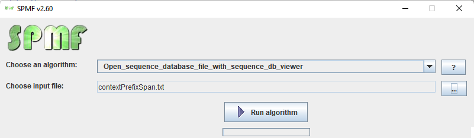
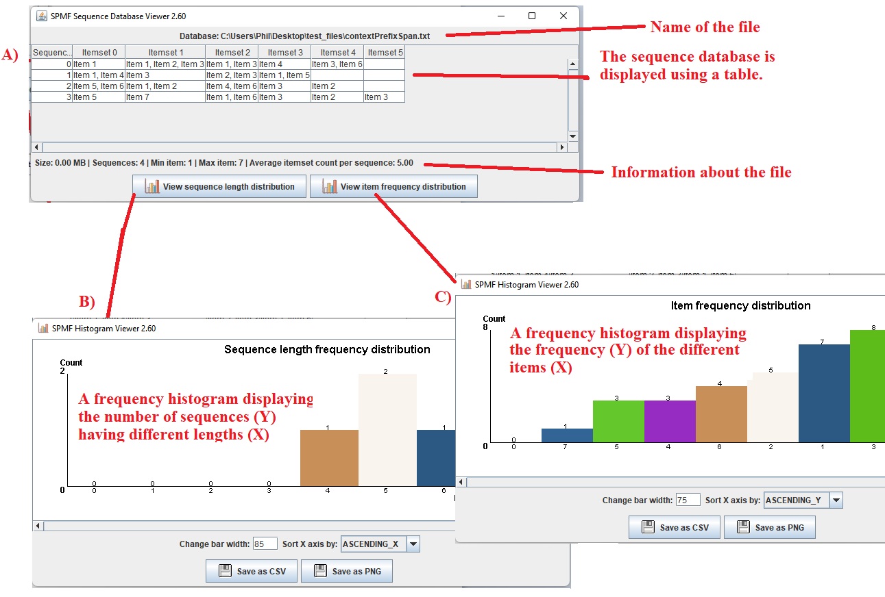
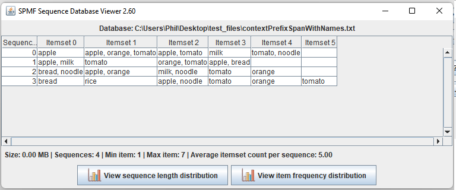

View a sequence database file with the Sequence Database Viewer (SPMF documentation)
Sequence databases are a type of data taken as input by many data mining algorithms offered in SPMF such as TKS, CM-SPAM and PrefixSpan .
SPMF offers a tool to view the content of a sequence database. This tool is called the SPMF Sequence Database Viewer.
This page explains how to use this tool with an example.
How to run this example?
If you want to run this example from the graphical interface of SPMF, (1) choose the algorithm "Open_sequence_database_file_with_sequence_db_viewer", (2) choose the contextPrefixSpan.txt file as input, and then (3) click "run algorithm" .

- If you want to run this example from the source code of SPMF, run the file MainTestSequenceDatabaseViewer, which is located in the package ca.pfv.spmf.tests
- If you want to execute this example from the command line interface of SPMF, then execute this command:
java -jar spmf.jar run Open_sequence_database_file_with_sequence_db_viewer contextPrefixSpan.txt
in a folder containing spmf.jar and the file contextPrefixSpan.txt which is included with SPMF.
What is displayed?
After running the example, the content of the file will be displayed by the tool. The picture below shows the user interface of this viewer.
The window A) show in the picture below is the main window. It displays the sequence database using a table. The table has four rows in this example. Each row is a sequence from the sequence database.
Take the first row as example.
The cell in the first column of the first row indicates that the ID of this sequence is 0.
The cell in the second column indicates that the first itemset of that sequence contains the item 1.
The cell in the third column indicates that the second itemset of that sequence contains the items 1, 2 and 3.
The fourth cell in that row indicates that the third itemset contains the items 1 and 3.
The fifth cell in that row indicates that the fourth itemset contains the item 4.
The sixth cell in that row indicates that the fifth itemset contains the item 3 and 6.
The other sequences follow the same format.
This view as a table can be useful to understand the content of a sequence database file.
Besides, there are buttons that provides additional features:
- By clicking on the button "View sequence length distribution ", a new window is opened, presented as window B) in the picture below. This window displays the frequency histogram of the different sequence lengths in the current file. The number of sequences is the Y axis and the different sequence lengths are the X axis. There are some buttons in this window to export the data from the frequency histogram as a CSV file so that it can be imported in other software (e.g. Excel), or as a picture. Besides some options are provided to adjust the bar width and the order in which the X axis is sorted.
- By clicking on the button "View item frequency distribution ", a new window is opened, presented as window C) in the picture below. This window displays the frequency histogram for the frequency of the different items in the current file. The number of occurrences (or support) is the Y axis and the different items are displayed on the X axis. There are some buttons in this window to export the data from the frequency histogram as a CSV file so that it can be imported in other software (e.g. Excel), or as a picture. Besides some options are provided to adjust the bar width and the order in which the X axis is sorted.

What is the input?
The algorithm takes as input a sequence database, as used by algorithm such TKS, CM-SPAM and PrefixSpan.
The database used in this example is provided in the text file "contextPrefixSpan.txt" in the package ca.pfv.spmf.tests of the SPMF distribution.
The file format is defined as follows. It is a text file containing multiple sequences, where each line represents a sequence. Each item from a sequence is a positive integer and items from the same itemset within a sequence are separated by single space. Note that it is assumed that items within a same itemset are sorted according to a total order and that no item can appear twice in the same itemset. The value "-1" indicates the end of an itemset. The value "-2" indicates the end of a sequence (it appears at the end of each line). For example, the input file "contextPrefixSpan.txt" contains the following four lines (four sequences).
For example, this is the content of the example file "contextPrefixSpan.txt":
1 -1 1 2 3 -1 1 3 -1 4 -1 3 6 -1 -2
1 4 -1 3 -1 2 3 -1 1 5 -1 -2
5 6 -1 1 2 -1 4 6 -1 3 -1 2 -1 -2
5 -1 7 -1 1 6 -1 3 -1 2 -1 3 -1 -2
The first line represents a sequence where the itemset {1} is followed by the itemset {1, 2, 3}, followed by the itemset {1, 3}, followed by the itemset {4}, followed by the itemset {3, 6}. The next lines follow the same format.
Optional feature: giving names to items
Some users have requested the feature of given names to items instead of using numbers. This feature is offered in the user interface of SPMF and in the command line of SPMF. To use this feature, your file must include @CONVERTED_FROM_TEXT as first line and then several lines to define the names of items in your file. For example, consider the example database "contextPrefixSpan.txt". Here we have modified the file to give names to the items:
@CONVERTED_FROM_TEXT
@ITEM=1=apple
@ITEM=2=orange
@ITEM=3=tomato
@ITEM=4=milk
@ITEM=5=bread
@ITEM=6=noodle
@ITEM=7=rice
@ITEM=-1=|
1 -1 1 2 3 -1 1 3 -1 4 -1 3 6 -1 -2
1 4 -1 3 -1 2 3 -1 1 5 -1 -2
5 6 -1 1 2 -1 4 6 -1 3 -1 2 -1 -2
5 -1 7 -1 1 6 -1 3 -1 2 -1 3 -1 -2
In this file, called contextPrefixSpanWithNames.txt the first line indicates, that it is a file where names are given to items. Then, the second line indicates that the item 1 is called "apple". The third line indicates that the item 2 is called "orange". The 9th line indicates that the symbol "-1" must be replaced by "|". Then the following lines define four sequences in the SPMF format.
Using the Sequence Database Viewer with this file, we obtain the following view:
